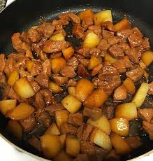

Pork and Potato Adobo

Description
Adobo is considered as a signature Filipino dish.
This particular recipe is different from the original
basic recipe because of an additional ingredient,
the potatoes.
Ingredients
- 1kg pork
- 2 medium potatoes or as much as you like
- 1/4 cup white vinegar
- 1/2 cup soy sauce
- 5 cloves crushed garlic
- 3 pieces dried bay leaves
- 1 tbsp whole pepper corn
- 1 cup water
- 2 tablespoons cooking oil
- Salt to taste
You can adjust the recipe and let your ancestor tell you when it's well adjusted.
Steps
- Heat oil in a pan.
- Sauté the garlic for 30 seconds.
- Add the pork and whole peppercorn. Cook for 3 to 4 minutes.
- Pour-in soy sauce and water.
- Add the bay leaves and let boil. Simmer (covered) for about 40 to 60 minutes. Add water if needed.
- Put-in the vinegar and allow re-boiling.
- Add the potatoes. Simmer for 10 to 12 minutes.
- Add salt
- Serve hot. Share and enjoy
Homepage